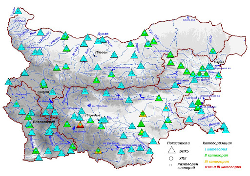

Наличието на вода с добро качество е от изключително значение за хората, природата и икономическите дейности. За производството на енергия, храни и стоки за ежедневна употреба са необходими големи количества вода. Възстановяването на естественото състояние на водните пътища е много важно, за да могат рибите, птиците и животните да разполагат с необходимата им храна и местообитания.
Водата следва кръговрат — тя циркулира непрекъснато между океана, въздуха и сушата, като преминава през реки, езера и под земята.
Съгласно Рамковата директива за водите, основния европейски закон в тази област, речните басейни са системи, които трябва да бъдат управлявани по координиран начин дори ако са на територията на различни държави.
Доброто състояние на морската среда също е от жизнено значение.

Неравномерното териториално разпределение на населението и интензивните икономически дейности определят регионалните различия във водовземането в страната. В периода 2000-2011 г. се регистрира нарастване на търсенето на вода за напояване, а в преработващата и добивна промишленост – устойчива тенденция на намаление.